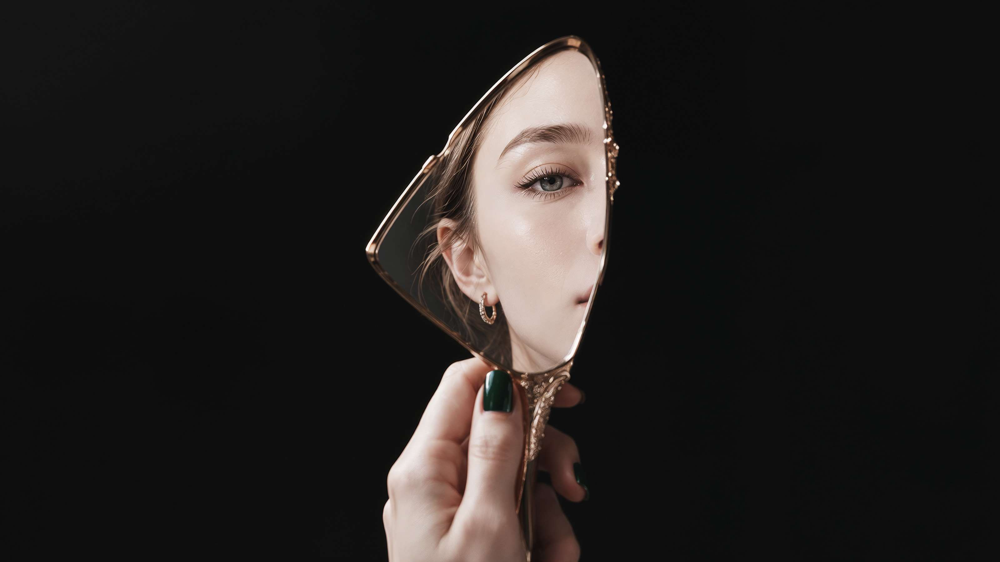
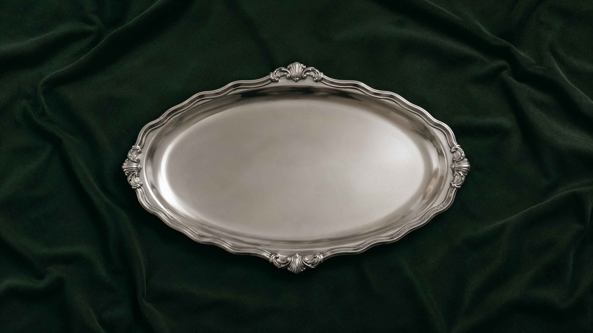
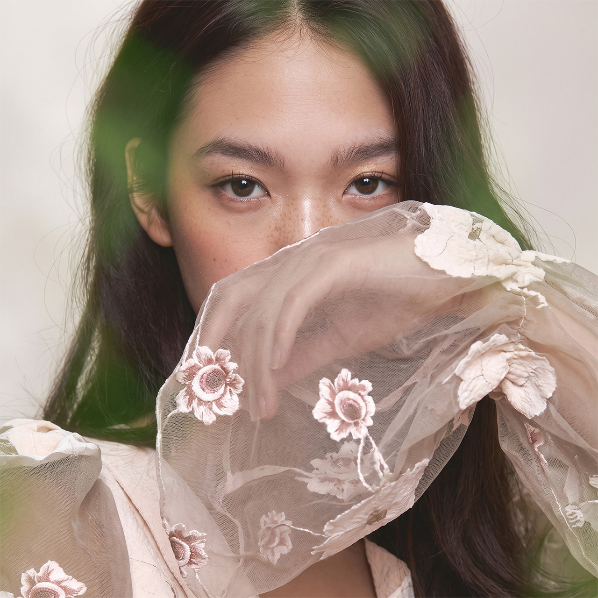
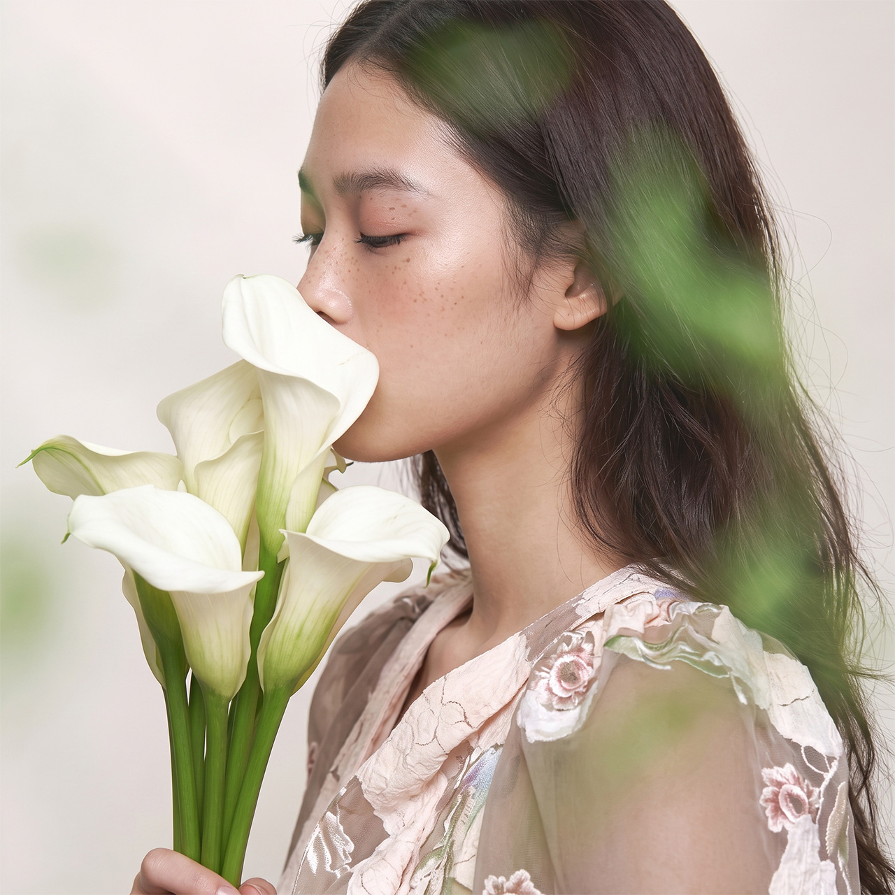
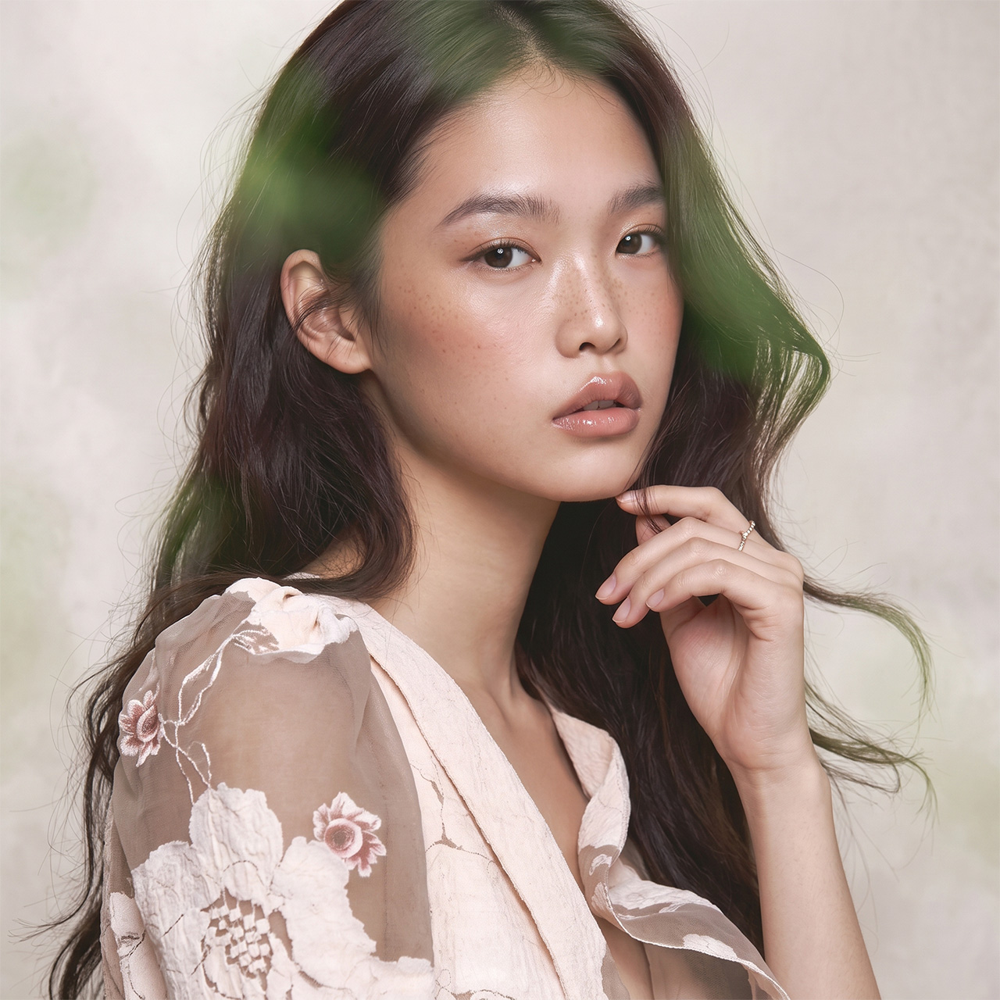
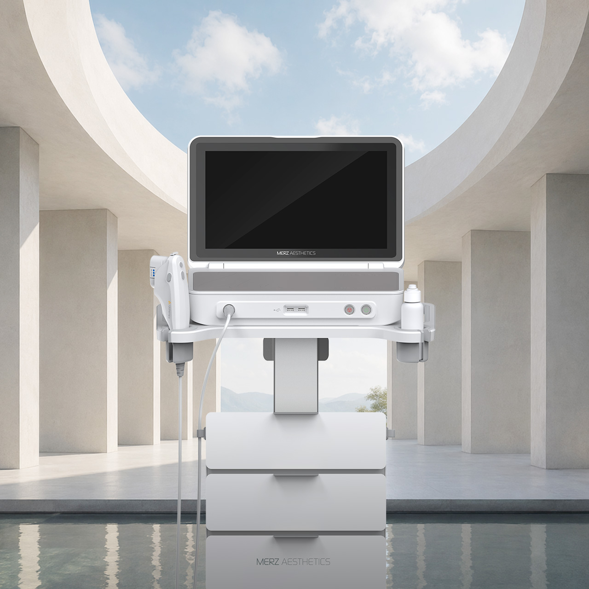
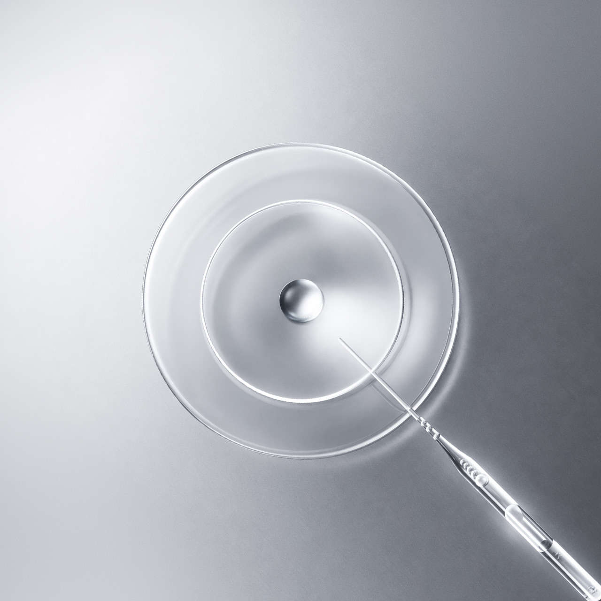

Surgery
얼굴의 뼈와 층을 읽어 온 성형외과 전문의가 눈수술부터 안면거상까지, 처짐의 깊이와 방향에 맞춰 직접 설계하고 집도합니다.
겉을 바꾸기보다 균형을 되찾아, 시간이 지나도 자연스러운 인상을 남깁니다.

Age management, personally
당신의 나이를, 오직 당신만을 위해 설계합니다.
한 사람만을 위해 존재하는 버틀러 성형외과 수술과 의원의 시술을 한곳에서 밀착 케어 합니다.
Plastic surgery & age management clinic
Featured Operation

눈 수술 쌍꺼풀부터 눈썹하거상까지 일곱 가지 방법으로 눈매의 형태와 기능을 개인의 결에 맞게 다듬는 수술로 얼굴 전체의 균형을 맞추어 인상의 균형을 맞춥니다.
이마 수술 처진 이마와 눈썹을 올리는 거상, 넓은 이마를 좁히는 축소, 두 과정을 한 번에 담는 축소거상으로 상안면의 비율과 인상을 정돈하는 수술입니다.
안면부 수술 안면부 수술은 턱밑 지방·근육 교정부터 미니리프팅, 하프거상, 안면거상까지 처짐의 범위와 깊이에 맞춰 얼굴의 윤곽과 라인을 정돈하는 수술입니다.
레이저 리프팅 초음파·고주파·마이크로파 에너지로 피부 깊은 층의 콜라겐 재생을 이끌어, 절개 없이 처짐과 탄력을 되살리는 비수술 리프팅입니다. 스킨 · 콜라겐 · ECM 부스터 수분·재생 성분과 콜라겐을 깨우는 생분해 입자, 피부 구조 성분(ECM)까지 직접 전해 결과 탄력·밀도를 안에서부터 다시 세우는 부스터 시술입니다.
재생세포 혈액·지방에서 얻은 성장인자와 사이토카인을 피부와 혈액에 전해, 둔해진 세포의 재생과 탄력 회복을 안에서부터 돕는 재생 안티에이징 시술입니다.